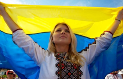
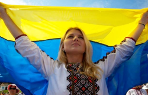

Люди землі
Ми - хлібороби. На СВОЇЙ землі господарюємо, створюємо, дбаємо про оселю.

Ми незламний народе великої країни!
Ми пишаємось нашим минулим, цінуємо те, що маємо, та готуємось до нашого спільного грандіозного майбутнього, яке обов’язково настане після перемоги!

Ми - хлібороби. На СВОЇЙ землі господарюємо, створюємо, дбаємо про оселю.
Ми з покон-віків - громади, які включають об'єднання індивідуальностей.

Фольклор розповідає правду, бо ми учасники, творці історії, та представляємо її, так як є.
У нас колядки, щедрівки, де возвеличують господаря, господиню, урожай.

Саме козаки були авторами та реалізаторами ідеї української держави та її легітимації у міжнародній спільноті як незалежної держави.
Відвага й вірність, здатність до самопожертви, любов до батьківщини - такі характеристики успадкував український народ у козаків.
Турецький літописець Наїма писав про запорожців: "Можна впевнено сказати, що неможливо знайти на цілій землі сміливіших людей, які так мало б дбали про своє життя і так мало боялися смерті".
Прагнення до неба
Блакитне небо на прапорі України та жовте жито, ще одна ознака нашого прагнення думками відірватися від землі та полетіти в безкрайнє небо, вийти за межі простору.
Саме тому українці реалізовували прагнення вийти за межі за допомогою розвитку авіаконструкторських заводів.
Підприємство "Антонов" створило гордість України, який став символом українського непереможного духу - "Мрію" - найбільший транспортний літак у світі.


"Вчора ми втратили, на жаль, нашу "Мрію". Але стару Мрію". А нову ми зараз будуємо. Слава Україні!"

Поділись думками, якою ти хочеш бачити Україну після перемоги?

Україна першою у світі запустила юридично легалізовані цифрові паспорти.
Країна стане вільною державою, яка буде тримати девіз незалежності.
В Україні пропадуть всі пост радянські нахили разом з будь якою соціальною нерівністю щодо статі, раси, релігії, сексуальної орієнтації, грошового статусу тощо.

В країні швидко поширяться новітні технології та почнеться їхнє фундаментальніше виробництво.
Після скрутних часів, Україна стане лідером в економіці та стане заможною країною.

Українці стануть щасливими, всі знайдуть те, чого шукали завжди і "все буде Україна!"

Україна зможе зформулювати свої ціннісні орієнтири та транслювати їх на весь світ, а саме: Можливо все, навіть те, у що ви не вірите! А вихід за рамки самого себе - це більш гуманістично, ніж постійно прагнути вийти за рамки технологічного розвитку.

Українці, як нація, стають зразком волевиявлення та прикладом побудови демократичних відносин не ”згори донизу”, а “знизу догори”!

Україна стає найбільш популярним та поширеним символом свсободи, віри, правди та сміливості у всьому світі. Все буде Україна!

Україна запрошує до першого в світі проекту колективної відбудови країни, в якій будуть задіяні ініціативи різних країн світу. Таким чином Україна дає можливість всьому світові відчути, що таке колективна стратегія та транслює нову етику відносин в світі.

Україна згадає про своє прагнення до неба та сонця, й запропонує новий проект: щоб закінчити війни на Землі, давайте будемо співпрацювати для нашого нового життя в космосі.

 


{kind=link}
{kind=link}
{kind=link}
{kind=link}
{kind=link}
{kind=link}
{kind=link}
{kind=link}
{kind=link}
{kind=link}
{kind=link}
{kind=link}
{kind=link}
{kind=link}
{kind=link}
{kind=link}
{kind=link}
{kind=link}